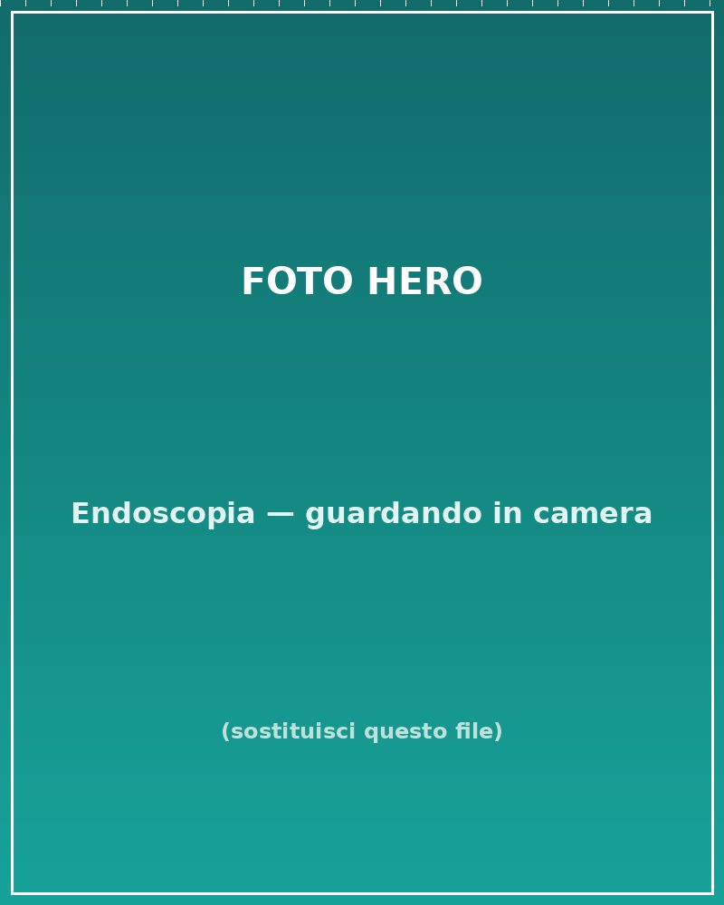
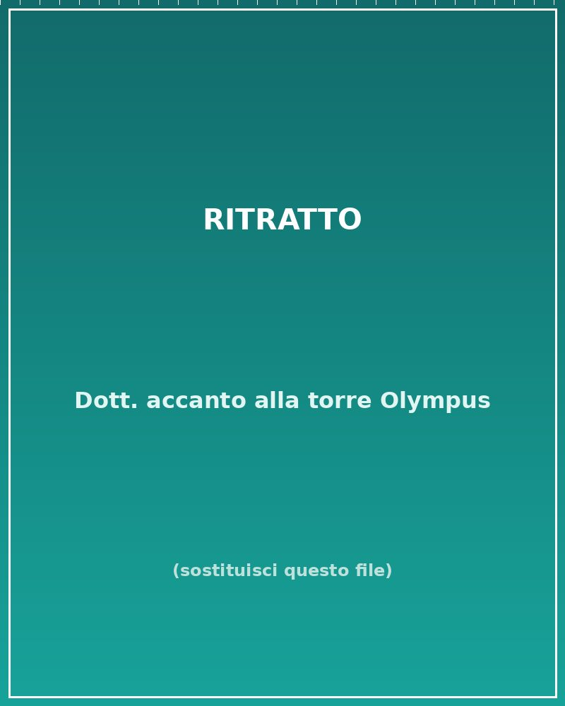
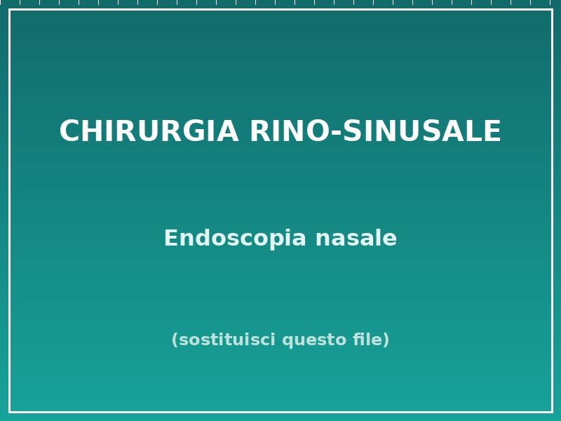
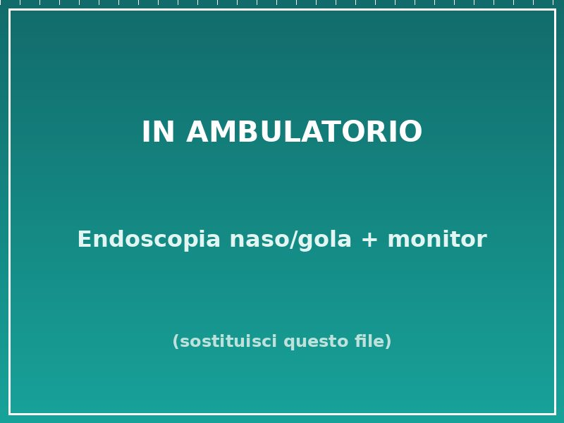
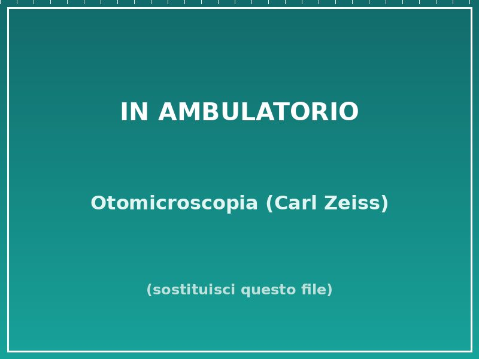

Visita otorinolaringoiatrica
Valutazione completa di naso, orecchio e gola con anamnesi accurata e indicazioni terapeutiche.
Otorinolaringoiatra · Verbano-Cusio-Ossola
Il Dr. Salvatore Catalano è specialista in otorinolaringoiatria, con particolare esperienza in chirurgia rino-sinusale, laringologia e medicina del sonno (russamento e apnee notturne).


Chi sono
Sono il Dr. Salvatore Catalano, Dirigente Medico Otorinolaringoiatra presso l'ASL del Verbano-Cusio-Ossola, con sede operativa prevalente all'Ospedale San Biagio di Domodossola. Mi occupo della diagnosi e del trattamento, anche chirurgico, delle patologie della testa e del collo, con particolare attenzione al distretto naso-sinusale.
Mi sono laureato in Medicina e Chirurgia all'Università di Salerno (2018) e specializzato in Otorinolaringoiatria all'Università di Pavia (2023), completando l'ultimo anno a Lugano, presso l'Ente Ospedaliero Cantonale. Ho sviluppato un forte interesse per la chirurgia endoscopica naso-sinusale, i disturbi respiratori del sonno e le patologie della voce.
Ho frequentato numerosi corsi di dissezione anatomica e perfezionamento chirurgico in Italia, Svizzera e Germania, e sto conseguendo un Master di II livello in Fonochirurgia e Office-based Laryngeal Surgery all'Università di Ferrara. Sono inoltre coautore di pubblicazioni scientifiche internazionali.
Prestazioni
Diagnostica completa e percorsi di cura per le patologie di naso, orecchio e gola, con strumentazione dedicata.
Valutazione completa di naso, orecchio e gola con anamnesi accurata e indicazioni terapeutiche.
Esame endoscopico ad alta definizione per visualizzare fosse nasali, seni e laringe.
Esame del condotto uditivo e del timpano con microscopio diagnostico.
Valutazione della capacità uditiva e della funzionalità dell'orecchio medio.
Studio della funzione labirintica per vertigini e disturbi dell'equilibrio.
Inquadramento di russamento e apnee ostruttive del sonno (OSAS) e percorsi di cura.
Interventi mini-invasivi naso-sinusali con recupero rapido e massima sicurezza.
Dermochirurgia testa-collo, medicazioni e visite di controllo post-ricovero.
Tariffe per pazienti privati senza assicurazione (non sono attive convenzioni). Il costo di alcune prestazioni può variare in base al singolo caso. Pagamenti accettati: carta di credito, bancomat, carta prepagata e contanti.
Chirurgia endoscopica naso-sinusale
La chirurgia endoscopica funzionale dei seni paranasali (FESS) permette di trattare sinusiti croniche, poliposi nasale e altre patologie del distretto rino-sinusale operando attraverso le narici, senza incisioni sul volto.

In ambulatorio
Strumentazione endoscopica e microscopica dedicata, per una diagnosi accurata di naso, orecchio e gola in un'unica seduta.


Patologie trattate
Un elenco delle condizioni più frequenti per cui i pazienti si rivolgono allo studio.
Sedi e orari
Piazza Vittime dei Lager Nazifascisti, 1 — 28845 Domodossola (VB)
Visita a distanza in videochiamata, su prenotazione
Zona servita
Lo studio è un punto di riferimento per i pazienti dell'Ossola e del Verbano-Cusio-Ossola. Ricevo abitualmente persone da:
Recensioni
25 recensioni verificate, da appuntamenti reali. Tra gli aspetti più apprezzati: attenzione durante la visita, spiegazioni dettagliate e puntualità.
Medico estremamente gentile e soprattutto competente. Spiega con chiarezza e grande professionalità.
Ha visitato mia figlia di 8 anni e l'ha fatta sentire benissimo. Molto disponibile e accurato, mi ha spiegato tutto: ha superato le mie aspettative.
Dottore competente, visita puntuale e approfondita, spiegazioni chiare ed esaustive. Disponibile per ogni necessità. Consigliato.
Una visita ottima sia a livello medico sia umano. Risposte chiare su come curarmi, eccellente nello spiegare e nel rassicurare.
Medico molto professionale, gentile e preciso in tutti i dettagli. Direi il massimo delle condizioni operative. Grazie Dottore.
Cordiale, meticoloso e professionale. Sono pienamente soddisfatto.
Domande frequenti
Puoi prenotare chiamando o scrivendo su WhatsApp al 366 217 5507, compilando il modulo di contatto in questa pagina oppure tramite MioDottore. È disponibile anche la consulenza online su videochiamata.
Sì, ricevo pazienti adulti e in età pediatrica (indicativamente dai 5 anni). L'accettazione dei più piccoli può variare in base alla sede della visita.
In base alle necessità, la visita può includere endoscopia naso-sinusale e laringea, otomicroscopia e una prima valutazione audiologica. Esami strumentali specifici vengono programmati quando indicati.
Sì. Mi occupo di medicina del sonno: inquadramento del russamento e delle apnee ostruttive del sonno (OSAS), con percorsi diagnostici e terapeutici dedicati.
No. La chirurgia endoscopica naso-sinusale (FESS) si esegue attraverso le narici, senza incisioni esterne sul volto, con tempi di recupero generalmente più rapidi.
Certamente. Lo studio è punto di riferimento per Domodossola e per tutto il Verbano-Cusio-Ossola: Villadossola, Verbania, valli ossolane e zone limitrofe.
Contatti
Compila il modulo o usa i contatti diretti: ti risponderò il prima possibile.